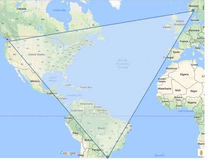

Often when people meet me, they ask, "Where are you from?" Such a simple question... and yet, I always hesitate to answer - it's complicated.
I start by stating, "...well, I was born and grew up in Brazil - ", and I get no further when I am interrupted with, "What? No way! With a name like Tollefson, how can you be Brazilian?"
And then it starts... I explain that actually, my grandparents are from Norway, my parents grew up in Seattle, but moved to Brazil where I was born. I then returned to Seattle for college where I have since lived. It get's complicated.
Norway, USA, and Brazil are the cornerstones of my heritage. Just as a cornerstone defines the foundation that joins walls, these countries are the cornerstones that join my heritage. These cornerstones define who I am.
